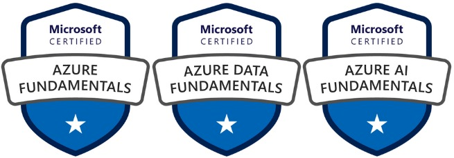
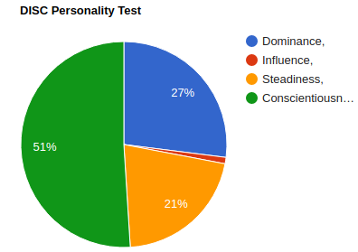
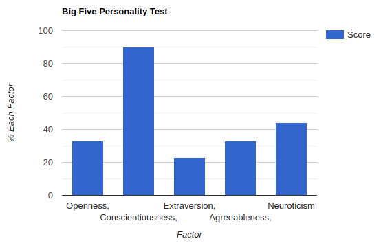

Andrey Olv
Curitiba, Paraná, Brazil
Cellphone/WhatsApp: +55 41 98779 4249
E-mail: andreyyolv@gmail.com
DATA ENGINEER - Open to work.
GOAL: Find my first job as Data Engineer.
Andrey Olv
Cellphone/WhatsApp: +55 41 98779 4249
E-mail: andreyyolv@gmail.com
DATA ENGINEER - Open to work.
GOAL: Find my first job as Data Engineer.
- Theoretical study of radiofrequency coverage for the implementation of radiocommunication sites and interpretation of software results.
- Site Survey for the implementation of radio communication sites.
- Radiocommunication Projects - Standards DMR (Digital Mobile Radio) and TETRA (Terrestrial Trunked Radio).
- Electrical installations and equipments in explosive atmospheres - ABNT NBR IEC 60079/ATEX/IECEx.
- Preventive maintenance inspection and site validation - R56 Motorola.
- Grounding and Lightning protection - ABNT NBR5419.
- Performance analysis of radiofrequency systems - Anritsu spectrum analyzer.
- Radio link projects - Cambium Networks, Ubiquiti, 4RF.
- Project documentation.
- Installation, configuration, testing and analysis of new products and solutions.
- Communication with partners/suppliers to answer technical questions about new solutions.
- Demonstration of innovative technical solutions showing confidence for high ticket customers with the sales team.
- Support for field installation teams and remote access to equipment configurations.
- Human exposure compliance report to electromagnetic fields according to government agency ANATEL - Resolution nº700, Act nº458, Act nº1674.
- I had my fisrt project as Project Manager
- Engineer responsible for the radio communication system at the Rock in Rio 2019 event.
- First project in the company of a PoC (PTT over cellular) radio solution via Wi-Fi/4G interoperable with TETRA network.
- First project in the company of a BDA (Bi-Directional Amplifier) solution to expand the coverage of the TETRA network.
- First project in the company of nLOS (non line of sight) radio link (430MHz, 2Mbits, 22Km).
- How the backstage work of a project sector, all its stages, difficulties and how small details can impact the course of projects.
- I improved a lot my communication due to contact with customers, suppliers and sales team.
- Field leader in telecommunications site activities.
- Installation of new sites, relocation, hot swap, uninstall, configuration of telecommunications sites.
- Installation of cabinet, antennas, BBU (Baseband Unit), RRU (Remote Radio Unit), AC/DC power, duplexer, baterry bank, optical fiber.
- Mobile base stations - (GSM, WCDMA, LTE/2G, 3G, 4G).
- Radio links - SIAE, Alcatel, Huawei, Nokia.
- Photographic quality report and approval of installations.
- Work at height (NR35) and installations and services in electricity (NR10).
- Outsourced service for the biggest Brazilian telecommunications companies - Claro, TIM, Telefônica/Vivo.
- Execution of contracts under normal conditions, always within the deadline and/or in advance the target and bonus for meeting or anticipating the SLA.
- Best Huawei Project 2018 team with higher productivity, the only one chosen to continue activities pending after contract expiration.
- Lead teams technicians in the field and deal with different types of personalities.
My list of most relevant courses ordenated by recent date
-> COURSE, INSTITUTION, PROFESSOR, DURATION, DATE(YEAR/MONTH), LANGUAGE <-
- Data Engineering with Apache Spark and Apache Kafka, Luan Moreno and Mateus Oliveira, 30h, 2022/03(soon), pt-br
- DAMA (Data Management) DMBOK, Data Engineering LATAM, Prof. David Regalado, 30h, 2022/03(soon), es-pe
- Preparing for Google Cloud Certification: Cloud Data Engineer Professional Certificate, Coursera - Google Cloud, 2022/02(soon), en-us
- Programming in T-SQL, Prof. Luiz Santana, 25h, 2022/02(doing), pt-br
- Spark, Kafka, Airflow, Kubernetes, Azure Data Engineer (soon update)
- Azure Databricks & Spark Core For Data Engineers(Python/SQL), Udemy, Ramesh Retnasamy, 15h, 2022/01, en-us
- Software Engineering, UFV (Federal University of Viçosa), Prof Lucas Vegi, 30h, 2021/12, pt-br
- Topics in Big Data, UFAM (Federal University of Amazonas), Prof. Altigran Soares da Silva, 25h, 2021/12, pt-br
- NoSQL Databases, UNIFEG (University Center of the Guaxupé Educational Foundation), Prof. Gustavo Poli, 10h, 2021/12, pt-br
- Databases, UNICAMP (Federal University of Campinas), Prof. André Santanchè, 30h, 2021/12, pt-br
- Container Orchestration with Kubernetes, Udemy, Geek University, 10h, 2021/11, pt-br
- Developer Essential Docker, Udemy, Geek University, 10h, 2021/11, pt-br
- Data Engineer Training, Data Science Academy, 300h, 2021/11, pt-br
- How to Win a Data Science Competition: Learn from Top Kagglers, Coursera, HSE University, 2021/10, en-us
- A deep understanding of deep learning (with Python intro), Udemy, Mike X Cohen, 60h, 2021, en-us
- TensorFlow Developer Certificate in 2021: Zero to Mastery, Udemy, ZTM Academy, 65h, 2021, en-us
- Machine Learning Engineering for Production (MLOps) Specialization, Cousera - DeepLearning.AI, 2021, en-us
- Deep Learning Specialization, Coursera - DeepLearning.AI, Prof. Andrew Ng, 2021, en-us
- Intro to Deep Learning and Generative Models, University of Wisconsin-Madison, Prof. Sebastian Raschka, 40h, 2021, en-us
- Intro to Machine Learning, University of Wisconsin-Madison, Prof. Sebastian Raschka, 35h, 2021, en-us
- Natural Processing with Deep Learning, Stanford University, Prof. Christopher Manning, 30h, 2021, en-us
- Deep Learning, Stanford University, Prof. Andrew Ng, 15h, 2021, en-us
- Machine Learning, Stanford Universty, Prof. Andrew Ng, 30h, 2021, en-us
- Time Series and Stochastic Processes, IFNMG (Federal Institute of Northern Minas Gerais), Prof. Petronio Silva, 25h, 2021, pt-br
- Topics in Data Science, IFNMG (Federal Institute of Northern Minas Gerais), Prof. Petronio Silva, 25h, 2021, pt-br
- Stochastic Processes, UFPA (Federal University of Pará), Prof. Marcelino Silva, 25h, 2021, pt-br
- Data Visualization and Exploration, USP (University of São Paulo), Prof. Cibele Russo, 20h, 2021, pt-br
- Image Processing, IMPA (Institute of Pure and Applied Mathematics), Prof. Luiz Velho, 40h, 2021, pt-br
- Statistics applied to Psychobiology I, UNIFESP (Federal University of São Paulo), Prof. Altay de Souza, 50h, 2021, pt-br
- SQL and NoSQL Database from basic to advanced, Udemy, Geek University, 55h, 2021, pt-br
- Concurrent and Asynchronous Programming with Python, Udemy, Geek University, 10h, 2021, pt-br
- Amazon Web Services (AWS): Essential, Udemy, Geek University, 15h, 2021, pt-br
- Introduction to Deep Learning, UTFPR (Federal Technological University of Paraná), Prof. Dalcimar Casanova, 25h, 2021, pt-br
- Introduction to Machine Learning, UTFPR (Federal Technological University of Paraná), Prof. Dalcimar Casanova, 25h, 2021, pt-br
- General Systems Theory and the Decision Making Process, IME (Military Engineering Institute), Prof. Marcos dos Santos, 45h, 2020, pt-br
- Data Scientist Training, Data Science Academy, 450h, 2021, pt-br
- Cosmology I, UFSC (Federal University of Santa Catarina), Prof. Alexandre Zabot, 25h, 2021, pt-br
- General Astrophysics, UFSC (Federal University of Santa Catarina), Prof. Alexandre Zabot, 35h, 2020, pt-br
- Python Programming from Basic to Advanced, Udemy, Geek University, 65h, 2020, pt-br
- Python Fundamentals for Data Analysis, Data Science Academy, 60h, 2020, pt-br
- Telecommunications Engineer, EADCCNA, 400h, 2020, pt-br
- Preparatory Course for CGA (ANBIMA Certification of Investment Managers), 30h, 2020, pt-br
- Preparatory Course for CEA (ANBIMA Certification of Investment Specialists), 40h, 2020, pt-br
- Philosophy Online Course, 1000h+, 2016-2022, pt-br
- Solar System Astrophysics, National Observatory, 120h, 2010, pt-br
Hi! My name is Andrey, and I'm looking for my first job as Data Engineer.
About me:
Proactivity and autonomy to solve problems and to learn what is needed for innovative projects, self-responsibility, accurate communication, continuous improvement, self-taught learning, learn something new everyday, results-oriented mindset, analytical and objective thinking.
I know myself very well, so certainly your cultural fit will demonstrate that I have an introverted personality with a very high score in Conscientiousness and a very low score in Extraversion/Influence according to Big Five and DISC personality methods :)
*********************************
My story:
I resigned from my job as a telecommunications engineer in April 2021 to prepare myself and migrate to work in the data area.
I started studying data science full time in the first 6 months, so I decided to change my focus and I've been studying full time for data engineering since November 2021.
I studied free 30+ academic disciplines about Big Data and AI that belong to courses of computer science, statistics, engineering and IT to solidify fundamental theory, and then I studied several courses about tools and technologies.
*********************************
Areas of knowledge:
- Programming Language: Python, SQL.
- Cloud Computing: Microsoft Azure [Blob Storage/Data Lake Gen2, Data Factory, Synapse Analytics, Databricks, Stream Analytics, HDInsight]
- Big Data: Apache Spark.
- DevOps & CI/CD: Docker.
- Machine Learning: Pandas, Scikit-Learn, Matplotlib.
- Deep Learning: TensorFlow, PyTorch.
- Deploy: Streamlit.
Now I'm studying: T-SQL, SQL Server, Google Cloud Platform (GCP), Apache Airflow, Apache Kafka, Kubernetes.
B2 English level:
- Reading / Listening: Very good
- Writing / Speaking: Fair
*********************************
To ensure that you've read my entire description, please use the keyword:'YHWH' to contact me.
Preference for PJ/B2B proposals and remote work.
Email: andreyyolv@gmail.com
Cellphone/WhatsApp: +55 41 98779 4249
Certifications:

Personality:


Myers-Briggs Personality Test: INTJ